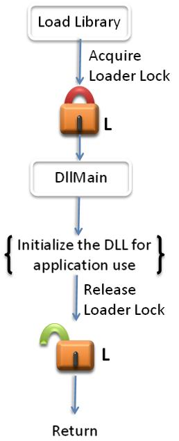
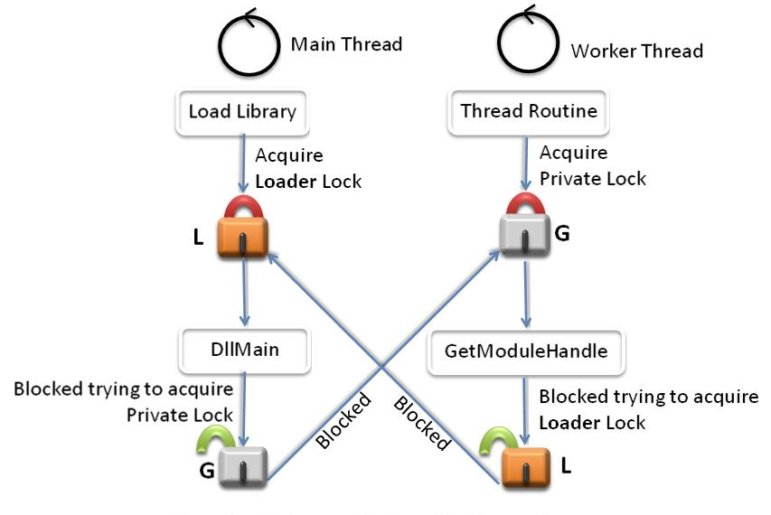

**Updated: **
Important APIs
Creating DLLs presents a number of challenges for developers. DLLs do not have system-enforced versioning. When multiple versions of a DLL exist on a system, the ease of being overwritten coupled with the lack of a versioning schema creates dependency and API conflicts. Complexity in the development environment, the loader implementation, and the DLL dependencies has created fragility in load order and application behavior. Lastly, many applications rely on DLLs and have complex sets of dependencies that must be honored for the applications to function properly. This document provides guidelines for DLL developers to help in building more robust, portable, and extensible DLLs.
Improper synchronization within DllMain can cause an application to deadlock or access data or code in an uninitialized DLL. Calling certain functions from within DllMain causes such problems.

DllMain is called while the loader-lock is held. Therefore, significant restrictions are imposed on the functions that can be called within DllMain. As such, DllMain is designed to perform minimal initialization tasks, by using a small subset of the Microsoft® Windows® API. You cannot call any function in DllMain that directly or indirectly tries to acquire the loader lock. Otherwise, you will introduce the possibility that your application deadlocks or crashes. An error in a DllMain implementation can jeopardize the entire process and all of its threads.
The ideal DllMain would be just an empty stub. However, given the complexity of many applications, this is generally too restrictive. A good rule of thumb for DllMain is to postpone as much initialization as possible. Lazy initialization increases robustness of the application because this initialization is not performed while the loader lock is held. Also, lazy initialization enables you to safely use much more of the Windows API.
Some initialization tasks cannot be postponed. For example, a DLL that depends on a configuration file should fail to load if the file is malformed or contains garbage. For this type of initialization, the DLL should attempt the action and fail quickly rather than waste resources by completing other work.
You should never perform the following tasks from within DllMain:
The following tasks are safe to perform within DllMain:
When you are implementing code that uses multiple synchronization objects such as locks, it is vital to respect lock order. When it is necessary to acquire more than one lock at a time, you must define an explicit precedence that is called a lock hierarchy or lock order. For example, if lock A is acquired before lock B somewhere in the code, and lock B is acquired before lock C elsewhere in the code, then the lock order is A, B, C and this order should be followed throughout the code. Lock order inversion occurs when the locking order is not followed—for example, if lock B is acquired before lock A. Lock order inversion can cause deadlocks that are difficult to debug. To avoid such problems, all threads must acquire locks in the same order.
It is important to note that the loader calls DllMain with the loader lock already acquired, so the loader lock should have the highest precedence in the locking hierarchy. Also note that code only has to acquire the locks it requires for proper synchronization; it does not have to acquire every single lock that is defined in the hierarchy. For example, if a section of code requires only locks A and C for proper synchronization, then the code should acquire lock A before it acquires lock C; it is not necessary for the code to also acquire lock B. Furthermore, DLL code cannot explicitly acquire the loader lock. If the code must call an API such as GetModuleFileName that can indirectly acquire the loader lock and the code must also acquire a private lock, then the code should call GetModuleFileName before it acquires lock P, thus ensuring that load order is respected.
Figure 2 is an example that illustrates lock order inversion. Consider a DLL whose main thread contains DllMain. The library loader acquires the loader lock L and then calls into DllMain. The main thread creates synchronization objects A, B, and G to serialize access to its data structures and then tries to acquire lock G. A worker thread that has already successfully acquired lock G then calls a function such as GetModuleHandle that attempts to acquire the loader lock L. Thus, the worker thread is blocked on L and the main thread is blocked on G, resulting in a deadlock.

To prevent deadlocks that are caused by lock order inversion, all threads should attempt to acquire synchronization objects in the defined load order at all times.
Consider a DLL that creates worker threads as part of its initialization. Upon DLL cleanup, it is necessary to synchronize with all the worker threads to ensure that the data structures are in a consistent state and then terminate the worker threads. Today, there is no straightforward way to completely solve the problem of cleanly synchronizing and shutting down DLLs in a multithreaded environment. This section describes the current best practices for thread synchronizing during DLL shutdown.
Thread Synchronization in DllMain during Process Exit
Thread Synchronization in DllMain for DLL_THREAD_DETACH during DLL Unload
If a DLL is unloaded after all its threads have been created, but before they begin executing, the threads may crash. If the DLL created threads in its DllMain as part of its initialization, some threads may not have finished initialization and their DLL_THREAD_ATTACH message is still waiting to be delivered to the DLL. In this situation, if the DLL is unloaded, it will begin terminating threads. However, some threads may be blocked behind the loader lock. Their DLL_THREAD_ATTACH messages are processed after the DLL has been unmapped, causing the process to crash.
The following are recommended guidelines:
Â
Â